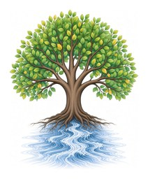

EternalOut of His throne, a river of life
Jesus is the Way, the Truth and the Life
A river runs from the throne of God and of the Lamb. That is the Wellspring — living water, already flowing, for anyone who will come. Eternal is the heart of the story: God dwelling with His people, His life among us, without end.
This age is loud with fake news, deception, hatred, division, violence, tribalism, injustice, fear and intimidation. It wounds what it cannot heal. The Word can. These expositions open His ways, His truth and His life in the Scriptures — practical for this day, prophetic for the hope set before us, when Jesus the Son of God returns.
That is the answer to mankind’s woes. Not another tribe. Not another rumour. The Way, the Truth and the Life. Come and drink.